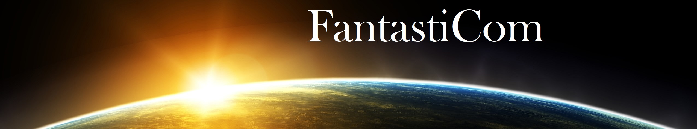
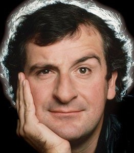
Daglas Adams
Sposobnost da se prepoznaju obrasci umetničkog dela da bi se njima poigralo, odlika je, po tvrdnjama teoretičara, visprenih pisaca i dokaz da je žanr u kome stvaraju toliko ‘odrastao’ da se može kritički samoposmatrati; od Servantesove parodije viteških romana proteže se neprekinuta linija knjiga koje su zasnovane na ovim principima. I u naučnoj fantastici postoji pregršt više-manje uspelih dela koja parodiraju žanrovske šablone i ikonografiju. Među stvaraocima koji su se poduhvatili ovog teškog zadatka ime Daglasa Adamsa (1952-2001) svakako je jedno od najblistavijih.
Adams je 1978. godine za radio BBC napisao scenario za seriju pod naslovom “«Autostoperski vodič kroz galaksiju”». Urnebesna priča o dogodovštinama, uzduž i popreko galaksije, poslednjeg stanovnika Zemlje (koja je uništena jer je na trasi svemirskog autoputa) u društvu mnoštva bizarnih likova (organskih i robotskih) doživela je neslućenu popularnost tako da je 1981. snimljena i istoimena TV serija». Adams je scenario pretočio i razvio u seriju romana: «”Autostoperski vodič kroz galaksiju”» (1979), “«Restoran na kraju vaseljene»” (1980), «”Život, vaseljena i sve ostalo»” (1982), “«Doviđenja i hvala na svim ribama»” (1984) i «”Uglavnom bezopasni”» (1992).
Osnovni, humorni, ton «”Autostoperskog vodiča” proizilazi iz veštog, nadahnutog parodiranja brojnih standardizovanih situacija u konfekcijskoj naučnoj fantastici; Adams majstorski vodi zaplete do groteksnog klimaksa dodajući im brze, višesmislene dijaloge. U najboljim stranicama «”Autostoperski...”» bruji briljantnim smehotresnim apsurdom. Zbog visokih standarda koje je sebi postavio Adams nije uspeo da u svim knjigama održi tenziju, ali je serija ostala samosvojni fenomen naučne fantastike.
Prevedena dela možete naći na ovom mestu.
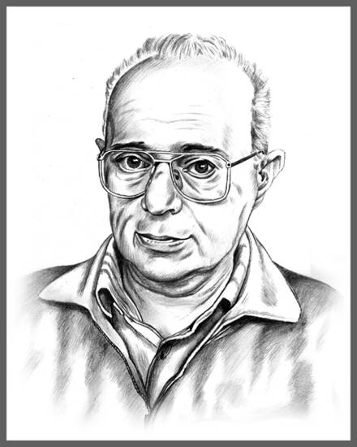
Stanislav Lem
Rođen je 12. septembra 1921. godine u Lavovu (u današnjoj Ukrajini) u ljekarskoj porodici.
Godine 1932. započinje gimnazijsko školovanje u Lavovu i maturira 1939. Od 1940. do 1941. studira na Medicinskom univerzitetu u Lavovu. Posle njemačke okupacije Lavova 1942. počinje da radi kao mehaničar i zavarivač. Posle sovjetskog zauzimanja Lavova 1944. nastavlja studije medicine. Godine 1946. u okviru procesa repatrijacije sa porodicom se seli u Krakov.
Iste godine piše prvu pripovijetku Čovjek s Marsa, koju u nastavcima štampa časopis Novi svijet doživljaja. Od 1946. do 1948. sarađuje sa krakovskim nedeljnikom Opšti nedeljnik, u kome štampa pjesme i priče. Od 1947. do 1950. godine radi kao mlađi asistent na Naučnom konzervatorijumu koji je vodio Mječeslav Hojonovski, saradnik mjesečnika Život nauke. Godine 1970. dobija nagradu Ministarstva inostranih poslova za popularizaciju poljske kulture u inostranstvu. Dvije godine kasnije postaje član komisije Poljske akademije nauka „Poljska 2000“.
Godine 1973. dobija nagradu Ministarstva kulture i umjetnosti za književnost i postaje počasni član Udruženja pisaca naučne fantastike Amerike. Godine 1976. u Poljskoj dobija Državnu nagradu prvog stepena u oblasti književnosti. Počasni doktorat Vroclavske politehnike dobija 1981. Iste godine u Poljskoj je zavedena vojna uprava i Lem 1982. godine odlazi na godišnju stipendiju u Zapadni Berlin na Visenšaftkoleg. Od 1983. do 1988. godine živi u Beču. Godine 1988. vraća se u Poljsku, a 1991. dobija austrijsku nagradu „Franc Kafka“. Tri godine kasnije postaje član poljske akademije umjetnosti, 1996. dobija Orden sa bijelim orlom, a 1997. postaje počasni građanin Krakova.
Prevedena dela možete naći na ovom mestu.
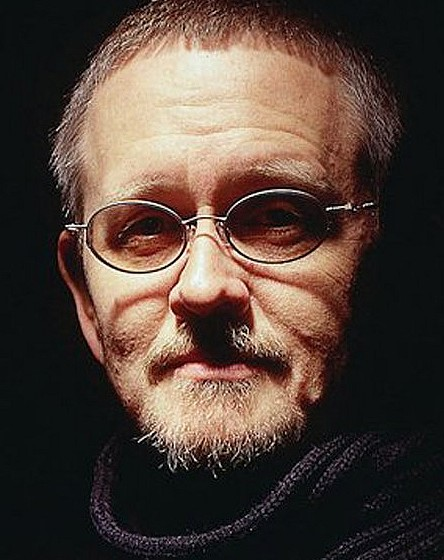
Orson Skot Kard
Orson Skot Kard (24. avgust 1951. Ričland, Vašington) je američki pisac, kritičar, esejista i kolumnista. Pisao je različite žanrove, ali je najpoznatiji po naučnoj fantastici. Njegovi romani Enderova igra i njegov nastavak Govornik za mrtve su dobili i nagrade Hjugo i Nebjula, čime je postao jedini autor koji je dobio obe ove nagrade dve godine uzastopno.
Dobio je 1981. master diplomu engleskog na Juta univeriztetu, Izuzetno je plodan i i dalje aktivan autor sa preko 50 objavljenih naslova. Pored naučne fantastike pisao je i savremenu fikciju, stripove, istorijske romane, scenarije za drame i mjuzikle, a sarađivao je i u izradi video igara: Advent rajzing, Dig, Tajna majmunskog ostrva.
Knjige su mu organizovane u nekoliko saga, od kojih je najpoznatija Enderova saga (Enderova igra, Govornik za mrtve, Ksenocid), zatim Senka saga, Posmatrači prošlosti i Priče o Alvinu Mejkeru.
Prevedena dela možete naći na ovom mestu.
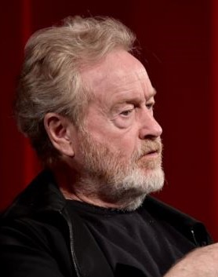
Den Simons
Den Simons (engl. Dan Simmons; rođen 4. aprila, 1948. u Peoriji, Ilinois, SAD) je američki pisac, najpoznatiji po svom romanu Hiperion(nagrađen Hugo priznanjem) i nastavku Pad Hiperiona. Ostali romani iz ove serije, nazvane Spev o Hiperionu su Endimion i Uspon Endimiona.
U svojim delima Simons povezuje razne žanrove: naučnu fantastiku, horor i epsku fantastiku, često u okviru istog dela. Tipičan primer Simonsovog običaja mešanja žanrova je roman Pesma boginje Kali iz 1985. godine, nagrađena sa World Fantasy Award. Pored toga, poznat je i kao autor misterija i trilera.
Prevedena dela možete naći na ovom mestu.
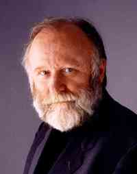
Frenk Herbert
Frenk Herbert (Franklin Patrick Herbert; Takoma, 8. oktobar 1920 — Medison, 11. februar 1986) je američki pisac naučne fantastike.
Rođen je kao Frank Herbert Junior u Takomi, Vašington. Sa 19 godina počinje da piše za lokalne novine, ali kada počne Drugi svetski rat odlazi u vojsku gde je vojni fotograf. Po povratku iz rata se upisuje na književnost, ali je nije diplomirao. Naučnu fantastiku počinje da piše 1950-ih. Njegova dela su inspirisana ekologijom u sprezi sa evolucijom, religijom i politikom.
Herbert je najviše poznat po svom romanu „Dina“ (1965), koji se smatra jednim od najboljih romana naučne fantastike ikada napisanih[traži se izvor]. Radnja je smeštena na pustinjsku planetu Arakis, koja je postojbina džinovskih crva i jedini izvor najtraženije droge u celom Univerzumu, začina melanža. Ova epska avantura je osvojila obe najznačajnije američke nagrade za stvaralaštvo iz oblasti naučne fantastike, „Hugo“ i „Nebula“, i dobila kultni status među čitaocima naučne fantastike.
Ogromna polularnost knjige dovela je do pet nastavaka: Mesija Dine (1969), Deca Dine (1976), Božanski car Dine (1981), Jeretici Dine (1984) i Kapitol Dina (1985).
Pored ovih, Herbert je autor i mnogih drugih romana koji su ostali u senci serijala o Dini: „Helstromova košnica“, „Odredište: ništavilo“, „Hajzenbergove oči“, „Eksperiment 'Dosadi'“, „Incident 'Isus'“, „Efekat 'Lazar'“...
U svojim pričama Herbert se često doticao velikih kulturoloških dešavanja i onih iz čovekove okoline.
Prevedena dela možete naći na ovom mestu.
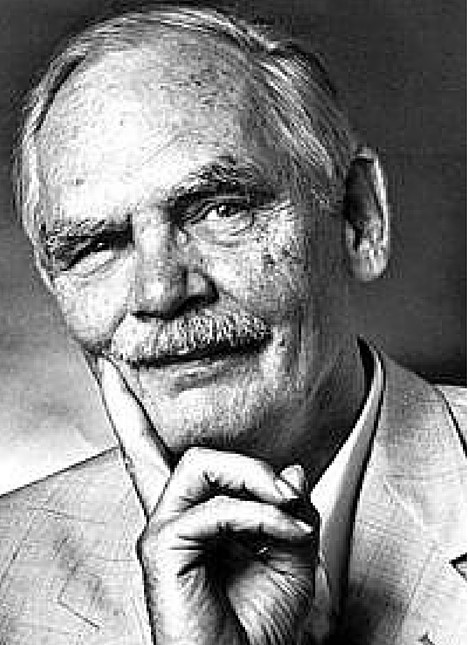
Frederik Pol
Frederik Džordž Pol mlađi (Frederik George Pohl, Jr. 26. novembar 1919 — 2. septembar 2013) bio je američki pisac, urednik i ljubitelj naučne fantastike, čija je karijera obuhvatila period od preko sedamdeset pet godina - od njegovog prvog objavljenog rada, poeme „Elegija za mrtvi satelit: Luna“ (Elegy to a Dead Satellite: Luna) 1937. godine, preko njegovog romana „Svi životi koje je odživeo“ (All the Lives He Led) iz 2011. do članaka i eseja objavljenih 2012.
U periodu od otprilike 1959. pa do 1969, Pol je uređivao časopis Galaksi i sestrinski časopis If; drugi je osvojio 3 uzastopne godinšnje nagrade Hjugo kao najbolji profesionalni časopis. Njegov roman Kapija iz 1977. godine je osvojio četiri nagrade za „najbolji roman godine“: Hjugo (izglasano od strane učesnika konvencije), Lotus (izglasano od čitalaca magazina), Nebjula (izglasano od strane američkih pisaca naučne fantastike) i akademska nagrada Džon V. Kembel (izglasan od strane žirija). Nagradu Džon V. Kembel je ponovo osvojio 1984. godine za svoju zbirku novela „Godine grada“ (енгл. Years of the City), jedan od dvoje koji su nagradu dobili dva puta u prvih četrdeset godina. Za svoj roman „Džem“ (енгл. Jem), Pol je dobio Nacionalnu nagradu za knjigu u kategoriji „naučna fantastika, tvrdo koričenje“. Ta knjiga je takođe bila finalista za tri druge nagrade za najbolji roman godine. Sve ukupno, osvojio je četiri nagrane Hjugo i tri nagrade Nebjula.
Udruženje Američki pisci naučne fantastike i fentezija (енгл. Science Fiction and Fantasy Writers of America) je 1993. godine imenovalo Pola dvanaestim dobitnikom Memorijalne nagrade Dejmon Najt za Velikog majstora a 1998. je uveden u Aleju velikana naučne fantastike i fentezija muzeja EMP, u trećoj klasi od dvoje preminulih i dvoje živih pisaca.
Pol je 2010. za svoj blog „Kako budućnost bloguje“ (The Way the Future Blogs) osvojio Hjugo nagradu za najboljeg pisca-ljubitelja".
Prevedena dela možete naći na ovom mestu.
Stanislav Lem
Stiven Erikson je jedan od najznačajnijih stvaralaca epske fantastike ne samo današnjice, već i u istoriji žanra. Svojim desetotomnim serijalom „Malaška knjiga Palih“ (od kojih je Laguna objavila prvih pet nastavaka, a šesti se prevodi) Erikson spaja dva veka epske fantastike, ali i dva pristupa žanru. Moglo bi se reći da je Erikson dugo vremena bio poslednji pisac velikih fantazijskih epova i prvi pisac tada još nedefinisanog grimdarka. Istovremeno se čitajući kao angažovana kritika savremenog društva i ljudske civilizacije, kao veličanstveni ep i kao strmoglava pustolovina, Eriksonov magnum opus s punim pravom ga je svrstao među pet najboljih i najpopularnijih savremenih stvaralaca epske fantastike.
Prevedena dela možete naći na ovom mestu.
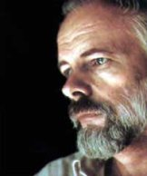
Filip K Dik
Filip K. Dik (Philip K. Dick; Čikago, 16. decembar 1928 — Santa Ana, 2. mart 1982) je bio američki pisac naučne fantastike. Nakratko je upisao Univerzitet Kalifornije u Berkliju, ali je prekinuo studije, a da nije položio nijedan ispit. 1952. godine, počeo je profesionalno da piše, i od tada je napisao trideset šest romana i pet zbirki priča. 1962. godine je za roman Čovek u visokom dvorcudobio nagradu Hugo za najbolji roman, a 1974. memorijalnu nagradu „Džon V. Kembel” za roman Tecite suze moje, reče policajac, za najbolji roman te godine. Filip K. Dik umro je 2. marta 1982, u Santa Ani, u Kaliforniji od posledica srčanog udara.
Prevedena dela možete naći na ovom mestu.
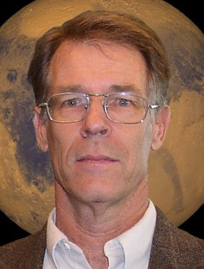
Kim Stenli Robinson
Kim Stenli Robinson (Kim Stenley Robinson), rođen 23.marta 1952. je američki pisac naučne fantastike. Pisanjem se bavi od 1975. godine. U svojim djelima istražuje ekološke i sociološke teme i većina njegovih romana direktna je posljedica naučnih tema kojima je bio lično opsjednut.
Kao rezultat njegove dugogodišnje opsjednutosti Marsom nastala su njegova vjerovatno najpoznatija djela među kojima i nagrađena Marsijanska trilogija. „Crveni Mars” (Red Mars)(1992) dobitnik je nagrade Nebula, a nastavci: „Zeleni Mars” (Green Mars)(1993) i „Plavi Mars” (Blue Mars)(1995) dobili su nagradu Hugo.
“Marsijanska trilogija” (The Mars trilogy) je svakako najpoznatije Robinsonovo djelo, bavi se prvim nastanjivanjem Marsa od strane grupe naučnika i inžinjera, 2027. godine i obuhvata period od 200 godina buduće istorije. Naslovi romana (crveni, zeleni, plavi) opisuju promjene koje se dešavaju tokom razvoja radnje, da bi na kraju imali gusto naseljeni teraformirani Mars, sa složenim političkim i socijalnim odnosima.
Prevedena dela možete naći na ovom mestu.
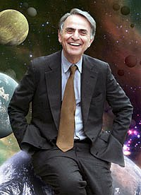
Karl Segan
Karl Segan (Carl Edward Sagan) je rođen 9. novembra 1934. godine u Bruklinu (N.Y, U.S.). Otac mu je bio baštovan, a majka domaćica. Nakon srednje škole studira u Čikagu fiziku, matematiku, hemiju i biologiju. 1955. je diplomirao, 1956. magistrirao, a 1960. doktorirao astronomiju i astrofiziku. Jedno vreme predaje na Harvardu da bi zatim prešao na Kornelov univerzitet (1968) gde radi kao redovan profesor.
Seganovo strasno zanimanje za planetarna istraživanja nije ostalo nezapaženo te dobija značajnu ulogu u Nasinim svemirskim poduhvatima. Njegovo ime vezano je za misije Mariner, Viking, Vojadžer, Pionir i Galileo. Istražuje efekat staklene bašte na Veneri, uticaj Marsovih peščanih oluja na promenu godišnjih doba, atmosferu Titana itd.
Velik deo svog radnog veka Segan je posvetio izučavanjima nastanka života na Zemlji, ali i van nje te postaje jedan od najznačajnihih egzobiologa u svetu. Zajedno sa Drejkom, Šklovskim i drugim naučnicima vršio je intenzivna traganja za vanzemaljskim oblicima života. Kako i dolikuje velikom naučniku Segan je bio pobornik miroljibive koegzistencije te je organizovao kongres američkih i ruskih egzobiologa i astronoma 1972. godine, dakle u vreme kad su odnosi dve vojne sile bili u stanju hladnog rata. Misije Pionir i Vojadžer takođe predstavljaju i Seganovo delo. U ovim letelicama nalaze se poruke čovečanstva upućene nekim drugim civilizacijama izvan Sunčevog sistema.
Seganovo ime je vezano i za SETI projekat.
Segan je objavio više od 700 radova za čega je dobio velik broj priznanja i počasnih zvanja na američkim koledžima. Nosilac je i Pulicerove nagrade, najznačajnijeg američkog priznanja za književnost.
Međutim, široj javnosti Segan je poznat pre svega po svojim akcijama na popularizaciji nauke. Bio je odličan govornik i odličan pisac. Umeo je zanimljivim pričama i primerima da objasni i najteže naučne teorije. Možda i najpoznatija naučno-popularna knjiga koja je ikad napisana je njegovo veliko delo Kosmos, po kojoj je snimljena TV serija. Serija je prikazana u 60 zemalja, a gledalo ju je pola milijardeljudi.
Segan je tvorac i nekoliko naučno-fantastičnih romana. Poznat je njegov bestseler Kontakt po kome je snimljen i dosta dobar film (ipak pročitajte knjigu).
1994. Segan je oboleo od raka koštane srži. Nakon transplatacije sledi privremeno poboljšanje i Segan nastavlja sa svojim radom.
20. decembra 1996. Karl Segan je umro.
Prevedena dela možete naći na ovom mestu.
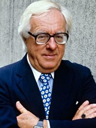
Rej Bredberi
Rej Daglas Bredberi (engl. Ray Douglas Bradbury, 22. avgusta 1920. — 5. jun 2012.) bio je američki pisac naučne fantastike. Najpoznatiji je po distopijskom romanu Farenhajt 451 i po zbirkama priča Marsovske hronike i Ilustrovani čovek. Bio je jedan od najslavnijih NF-pisaca 20. veka]. Mnoga njegova dela su ekranizovana u vidu televizijskih serija i igranih filmova.
Prevedena dela možete naći na ovom mestu.
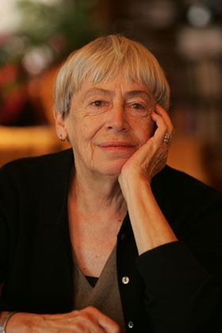
Ursula Legvin
Ursula Le Gvin (Ursula Kroeber Le Guin; rođena 21. oktobra, 1929 godine) je američka spisateljica romana, knjiga za decu i kratkih priča, većinom u žanru fantazije i naučne fantastike. Ona takođe piše poeziju i eseje.
Od prvog objavljivanja 60-ih godina, njen rad često opisuje futuristične ili izmišljene svetove slične našim u politici, prirodnom okruženju, uzrastu, religiji, seksualnosti i etnografiji.
Inspirisala je dobitnike nagrade Buker i mnoge druge pisce, kao što su Salman Rušdi i Dejvid Mičel – kao i značajne pisce futuristike i fantazije uključujući Nila Gejmana i Ijana Benksa. Nekoliko puta je osvajala Hjugo, Nebjula, Lokus i Svetsku nagradu za fantastiku. Godine 2014. je odlikovana medaljom National Book Award za istaknut doprinos američkoj književnosti.
Prevedena dela možete naći na ovom mestu.